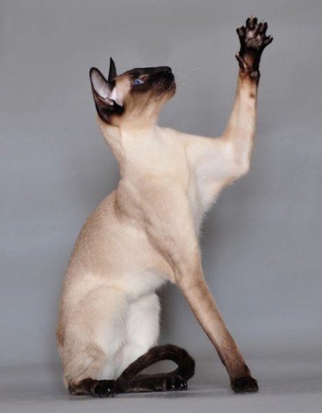

Сиамская порода кошек

Сиамская кошка — одна из известных пород кошек сиамо-ориентальной группы.
Современная сиамская кошка имеет весьма характерную внешность, отличительными чертами которой являются тонкое, длинное, трубообразное гибкое тело, голова в виде длинного клина, большие миндалевидные косо поставленные глаза ярко-синего цвета, очень большие уши, широкие в основании и заостренные на концах, поставленные таким образом, чтобы между мочкой носа и кончиками ушей образовывался равносторонний треугольник. Шерсть короткая, плотно прилегающая к телу, без подшерстка. Очень длинный хлыстообразный хвост, тонкий от самого основания с заостренным кончиком.
Это очень активные кошки, которые стремятся быть в центре внимания. Эти кошки очень нуждаются во внимании, любят физический контакт и не терпят, чтобы их не замечали. Общительные и ласковые, очень привязываются к людям, с которыми живут, могут вести себя по отношению к ним ревниво и собственнически.